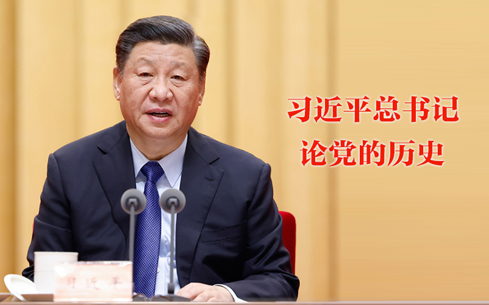

重要概论
要闻要论
动态进展
媒体群萃
为民办事
党史资料

中央精神
习近平作出重要指示强调 不断巩固拓展党史学习教育成果 团结带领全国各族人民满怀信心奋进新征程建功新时代
中国共产党第十九届中央委员会第六次全体会议公报
习近平总书记在庆祝中国共产党成立100周年大会上的讲话
习近平在党史学习教育动员大会上强调 学党史悟思想办实事开新局 以优异成绩迎接建党一百周年
习近平在清华大学考察时强调 坚持中国特色世界一流大学建设目标方向 为服务国家富强民族复兴人民幸福贡献力量
习近平署名文章：谱写新时代中国宪法实践新篇章 ——纪念现行宪法公布施行40周年
学习贯彻六中全会精神
MORE
中国科大召开党委理论学习中心组集中学习会 深入学习习近平总书记关于《中共中央关于党的百年奋斗重大成就和历史经验的决议》的说明
中国科大召开党委理论学习中心组集中学习会 深入学习十九届六中全会精神
校党委常委、副校长周丛照赴附一院宣讲党的十九届六中全会精神
校宣讲团成员韩荣典教授为马克思主义学院师生宣讲党的十九届六中全会精神
校宣讲团成员叶政老师作学习贯彻党的十九届六中全会精神宣讲报告
校宣讲团成员汪晓莲教授为先研院师生宣讲党的十九届六中全会精神
学习“七一”重要讲话精神
MORE
学校召开党委理论学习中心组集中学习会 深入学习习近平总书记“七一”重要讲话精神
中国科大认真组织集中收看庆祝中国共产党成立100周年大会
马克思主义学院举办深入学习贯彻习近平总书记“七一”重要讲话精神活动
汪晓莲老师作学习贯彻习近平总书记“七一”重要讲话精神宣讲报告
我校举办“习近平新时代中国特色社会主义思想”系列讲座 安徽省委党校吴梅芳教授作专题报告
校长助理吴枫在先进技术研究院 宣讲习近平总书记“七一”重要讲话精神
学习动态
MORE
中国科学技术大学召开党史学习教育总结会议
中国科大召开党委理论学习中心组集中学习会 深入学习习近平总书记关于《中共中央关于党的百年奋斗重大成就和历史经验的决议》的说明
中国科大召开党委理论学习中心组集中学习会 深入学习十九届六中全会精神
中国科大认真组织集中收看庆祝中国共产党成立100周年大会
学校召开学习贯彻习近平总书记在清华大学考察时重要讲话精神座谈会
黄素芳作学习贯彻党的二十大精神宣讲报告
精神传承
MORE
弘扬“两弹一星”精神
弘扬老一辈科学家精神
弘扬校训精神
学校举行赵忠尧先生诞辰120周年纪念展揭幕仪式
中国科大宣传部党支部与新华网安徽分公司党支部开展支部共建主题党日活动
传承弘扬科学家精神 坚定科技报国理想信念——计算机学院2022级研究生入学教育系列活动之“传承老科学家精神”专题报告会成功举办
为中国人民谋幸福，为中华民族谋复兴!